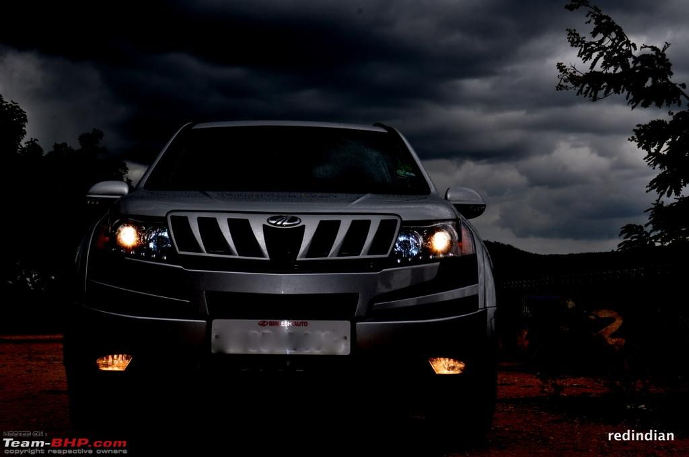

Wellcome to my website
- website
-
XUV500 Specs, Features and Price
The Mahindra XUV500 has 2 Diesel Engine and 1 Petrol Engine on offer. The Diesel engine is 2179 cc and 1997 cc while the Petrol engine is 2179 cc . It is available with Manual & Automatic transmission.Depending upon the variant and fuel type the XUV500 has a mileage of & Ground clearance of XUV500 is 200mm. The XUV500 is a 7 seater 4 cylinder car and has length of 4585mm, width of 1890mm and a wheelbase of 2700mm.
